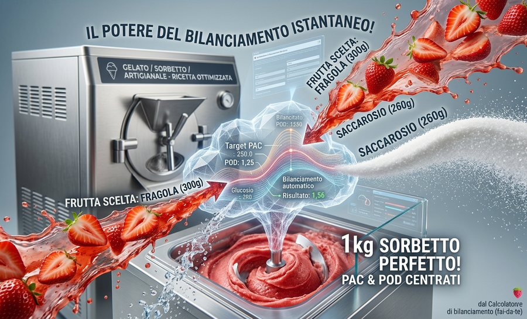

Dieses Werkzeug wurde auf eine eigene Seite verschoben. Wenn du dein Rezept kostenlos von uns optimieren lassen möchtest, geh zurück zur Startseite und nutze das Formular "Wir optimieren dein Rezept kostenlos".

Balance-Rechner für Fruchtsorbets — unabhängig von der Vitrinentemperatur. Gib Frucht und Saccharose ein: Dextrose und Wasser berechnen sich automatisch, um den Ziel-PAC-Wert zu erreichen. Du kannst zwischen Neutro frutta (Stabilisator, feste Dosierung ~5 g/kg, ohne Zucker) oder Base frutta (Zuckerpaste, typische Dosierung 50–100 g/kg je nach Produkt) wählen: bei der Base sind die PAC/POD-Werte nicht mehr 0 und müssen aus dem Datenblatt deines Produkts entnommen werden — eine zu hohe Dosierung macht das Eis trüb und schlecht verkäuflich, bleibe im vom Hersteller angegebenen Bereich. Der resultierende POD-Wert ist ohnehin eine Folge des Rezepts und nicht immer gleichzeitig mit dem PAC-Wert exakt zu treffen.